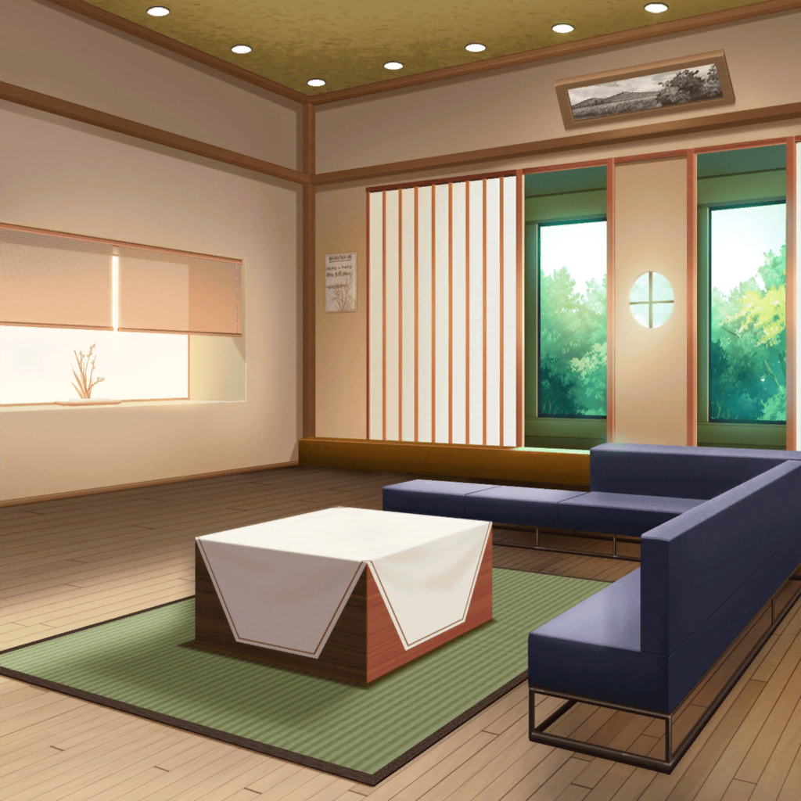

数日後
美竹家 玄関前
ひまり
蘭～……ほんとに１人で大丈夫？ ついて行こうか？
蘭
大丈夫だってば！
モカ
蘭がまた泣きながら飛び出してこないか心配だよ～
蘭
……モカ、嫌い
モカ
じょーだん～
つぐみ
蘭ちゃん、頑張ってね！
巴
アタシ達はここで待ってるから。
……しっかりやってこいよ
蘭
ほんと、平気だから！
……それじゃ、行ってくる
ひまり
あぁ～！ なんか、ドキドキしてきた！
やっぱり、心配だよ～
巴
今は蘭を信じよう
ひまり
てか、つぐ、体調は大丈夫？
退院してすぐなんだから無理しちゃダメだからね～？
つぐみ
ありがとう。私はもう大丈夫だよ！
蘭ちゃん、うまくいくといいね
モカ
……がんばってこーい、蘭

美竹家 リビング
蘭
……父さん
蘭の父
蘭か。どうした？ バンドをやめる気になったのか？
蘭
やめない。……やめたくないから、話、しにきた
蘭の父
……
蘭
父さん。あたしはバンドをやめない。
……これからもずっと、続けていく。父さんはバンドを
ごっこ遊びって言うけど、あたし達は本気でやってる
蘭の父
口で本気と言われたところで、これまでのお前の行動を考えると
納得することはできないな
蘭
……このチケット、父さんに
蘭の父
ガールズバンドジャム……？ なんだこれは？
蘭
ガールズバンドのイベントなんだけど、出演バンドの中にある、
Afterglowってやつ……それが、あたし達。
……このイベントを父さんに見に来てほしい
蘭
あたし達は今、このイベントに向けて頑張ってる。
父さんにあたし達の本気を見せたい。見て……納得してほしい
蘭
……ライブが終わったら、真剣に華道のことも考えたいと
思ってる。もっとちゃんと、いろんなことに向き合って、
答えを出していきたい
蘭の父
……蘭
蘭
……おねがい、します……！
蘭の父
……わかった
蘭
父さん……！
蘭の父
見に行こう。
だが、私を納得させる演奏をしなかった時は考えさせてもらうぞ
蘭
……！
もちろん、納得させてみせる。
その為に父さんに来てもらうんだから
蘭の父
ふっ。威勢がいいな。
思えば、はじめてだな。
お前が私に自分の思いをぶつけてきたのは……
蘭
そうだっけ
蘭の父
……よく、言ってくれたな
蘭
別に、バンドがやりたいだけだし
蘭の父
そうか
蘭
じゃああたし、このあと練習があるから……
蘭の父
ああ
蘭
……父さん
蘭の父
……なんだ？

蘭
ありがと